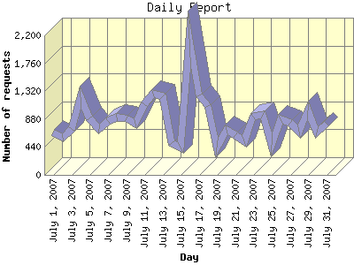

Report generated by Analog 6.0 and Report Magic 2.21
|
Web Server Statistics for "Harish Narayanan (hnarayan) - July 2007" Report generated by Analog 6.0 and Report Magic 2.21 |
The Daily Report identifies the activity for each day within the reporting period. Remember that one page hit can result in several server requests as the images for each page are loaded.

| Day | Number of requests | Number of bytes transferred | Percentage of the bytes | Percentage of the requests | |
|---|---|---|---|---|---|
| 1. | July 1, 2007 | 662 | 24.583 MB | 1.83% | 2.46% |
| 2. | July 2, 2007 | 589 | 21.848 MB | 1.63% | 2.19% |
| 3. | July 3, 2007 | 729 | 27.530 MB | 2.05% | 2.71% |
| 4. | July 4, 2007 | 1,230 | 72.927 MB | 5.43% | 4.58% |
| 5. | July 5, 2007 | 897 | 32.721 MB | 2.44% | 3.34% |
| 6. | July 6, 2007 | 722 | 37.386 MB | 2.78% | 2.69% |
| 7. | July 7, 2007 | 855 | 33.507 MB | 2.49% | 3.18% |
| 8. | July 8, 2007 | 901 | 30.457 MB | 2.27% | 3.35% |
| 9. | July 9, 2007 | 890 | 46.422 MB | 3.46% | 3.31% |
| 10. | July 10, 2007 | 810 | 23.767 MB | 1.77% | 3.02% |
| 11. | July 11, 2007 | 1,110 | 49.095 MB | 3.65% | 4.13% |
| 12. | July 12, 2007 | 1,287 | 29.416 MB | 2.19% | 4.79% |
| 13. | July 13, 2007 | 1,246 | 54.135 MB | 4.03% | 4.64% |
| 14. | July 14, 2007 | 508 | 58.200 MB | 4.33% | 1.89% |
| 15. | July 15, 2007 | 437 | 22.213 MB | 1.65% | 1.63% |
| 16. | July 16, 2007 | 2,141 | 45.761 MB | 3.41% | 7.97% |
| 17. | July 17, 2007 | 1,256 | 58.002 MB | 4.32% | 4.68% |
| 18. | July 18, 2007 | 1,090 | 46.947 MB | 3.50% | 4.06% |
| 19. | July 19, 2007 | 435 | 70.165 MB | 5.22% | 1.62% |
| 20. | July 20, 2007 | 710 | 66.108 MB | 4.92% | 2.64% |
| 21. | July 21, 2007 | 630 | 64.609 MB | 4.81% | 2.35% |
| 22. | July 22, 2007 | 526 | 40.469 MB | 3.01% | 1.96% |
| 23. | July 23, 2007 | 921 | 41.878 MB | 3.12% | 3.43% |
| 24. | July 24, 2007 | 942 | 38.496 MB | 2.87% | 3.51% |
| 25. | July 25, 2007 | 471 | 56.749 MB | 4.22% | 1.75% |
| 26. | July 26, 2007 | 881 | 61.009 MB | 4.54% | 3.28% |
| 27. | July 27, 2007 | 821 | 45.913 MB | 3.42% | 3.06% |
| 28. | July 28, 2007 | 680 | 36.654 MB | 2.73% | 2.53% |
| 29. | July 29, 2007 | 1,015 | 64.860 MB | 4.83% | 3.78% |
| 30. | July 30, 2007 | 666 | 25.517 MB | 1.90% | 2.48% |
| 31. | July 31, 2007 | 805 | 15.900 MB | 1.18% | 3.00% |
Most active day July 16, 2007 : 548 pages sent. 2,141 requests handled. 47,984,103.00 served.
Daily average: 866 requests handled. 43.331 MB served.
This report was generated on August 3, 2007 10:04.
Report time frame July 1, 2007 00:07 to July 31, 2007 23:50.
| Web statistics report produced by: | |
 Analog 6.0 Analog 6.0 |  Report Magic 2.21 Report Magic 2.21 |